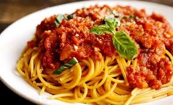

Home
Spaghetti

This crowd-pleasing spaghetti casserole recipe will satisfy all your comfort food cravings.
Ingredients:
Spaghetti: This easy dinner starts with a 12-ounce package of spaghetti.
Cream cheese and sour cream: Cream cheese and sour cream are essential for the creamy casserole.
Cheeses: You’ll need shredded part-skim mozzarella cheese and Parmesan cheese.
Oil: Cook the beef in two tablespoons of olive oil.
Sirloin: Ground beef takes the heartiness up a notch.
Onion: An onion lends bold flavor.
Seasonings: Season the spaghetti casserole with fresh garlic, Italian seasoning, kosher salt, and black pepper.
Sauce: Use jarred spaghetti or marinara sauce or make your own at home.